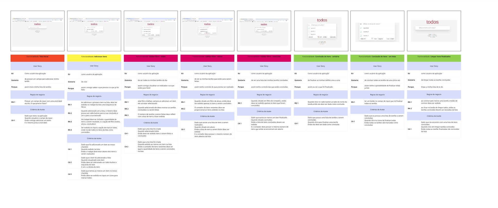

Criação de Upstream das funcionalidades de gerenciador de tarefas(To-Do List)
O método upstream no desenvolvimento de software prioriza as fases iniciais do projeto, enfatizando a captura precisa de requisitos e a definição de funcionalidades em colaboração com stakeholders. Ao investir tempo nessas etapas cruciais, busca-se estabelecer bases sólidas para o desenvolvimento, reduzindo retrabalhos e garantindo a entrega de um produto alinhado com as expectativas dos usuários. As equipes focam em mitigar riscos desde o início do projeto, promovendo uma compreensão profunda dos requisitos e objetivos do cliente, o que ajuda a evitar problemas de escopo mal definido e assegura um processo de desenvolvimento mais suave.
